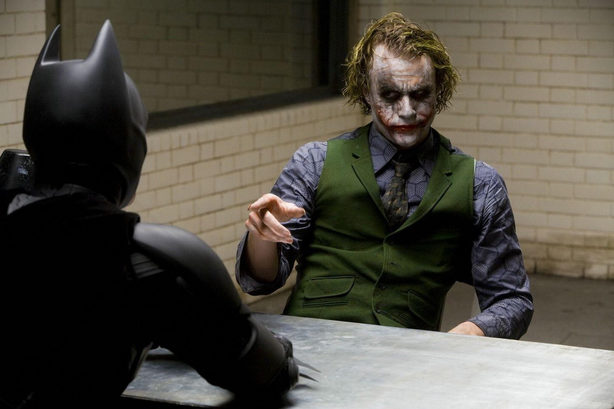
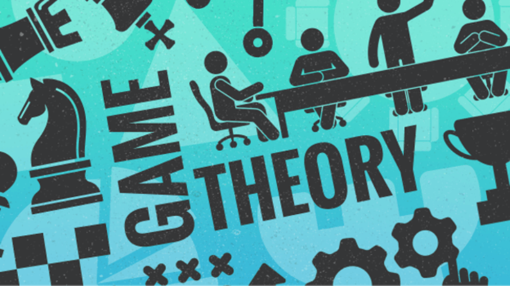
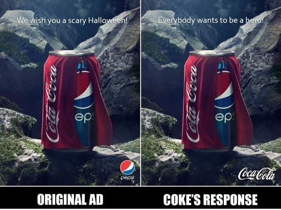

Game Theory and its essence in Businesses
Note: I wrote this article for my college’s Consulting Club and posted it here initially. This post is reproduced from there.
Have you ever wondered how the clown prince — — The Joker from The Dark Knight(2008), was able to craft mayhem and chaos so strategically that a single crazy guy, who even gave the Batman a big run for his money.

I’d say because he’s one of the most skilled villains in being a schemer, a tactician and not to forget this, a great manipulator with finesse in playing mind games. He played with people’s rational behaviour by offering coerced choices to make insane decisions throughout the movie. He knows a little bit of game theory, before that I want to confess this: I started this article with this specific case, just to convince you that Game theory isn’t nerdy stuff as the name sounds.
No??
Okay, let’s make it as geeky stuff then :p
What Is Game Theory?

Game theory is the study of theoretical frameworks conceiving social situations among competing players. It’s like mathematical modelling of the real-life situations in various fields from Social science, logic and goes to the extent of Nuclear deterrence between nations during warfare. Game theory is modelled to optimize the decisions in a strategic way to maximize the outcome were multiple players are competing. Therefore, it’s an excellent tool for decision-making, given the required data.
TDK Joker deployed relevant thought experiments throughout the movie starting with the opening robbery scene where he exploited his shady-little-incentive-scheme(refer The Pirate Puzzle)to get rid of the crooks he employed for the heist. And the ferry scene, where two boat-loads of passengers are given until midnight to press a button, detonating the explosives in the other ship’s hold before the Joker blows up both boats himself, this is a clone version of the famous The Prisoner’s Dilemma. Now, pardon the Nolan-fanboy in me, let’s dive into the crux of this article.
Why Decision Making Is Paramount for a Business :
When the resources(say market-size) are limited, one who takes the most calculated decisions captures the lions share of the scarce resources(market-share) available out there. Ergo, it’s of utmost importance to list out all the possible choices and their respective pay-offs. Real-world scenarios for such situations are pricing competition, and product releases (and many more) can be laid out, and their outcomes predicted. Hence, a firms ability to take smart and subtle game-moves during difficult times makes or breaks the businesses of the entity.
Note: Game theory assumes all the players are rational, and they crave to maximize their desired outcomes.
To understand how such a game takes place, let’s look at some cases put forward by Deepak Mehta, in one of his Quora Answers.
- Ad wars:

Coke vs Pepsi: A Scary Halloween Ad CampaignConsider the ad wars between Pepsi and Coke. Let’s assume that their sales are $ 10bn each (Let the total market size remain constant at $ 20 bn).
If both do not advertise, the market share remains the same. Suppose both spend $ 1bn advertising, their market share still remains the same but then lose $1bn worth of profits. However, if they do not advertise, they stand to lose more as the competitor will eat into their market share (If Pepsi, does not advertise, Coke gets 15, Pepsi gets 5).
So, they both advertise. Although the best strategy would be for both to not advertise, their dominant strategy (the strategy which pays best irrespective of what the other player does) is to advertise.
- Why competitors build their stores next to each other:
An explanatory video for why competitors build their stores next to one another.
For simplicity, assume that a country has only 6 locations where stores can be built. They give you 2, 4, 6, 8, 10 and 12 units of profit respectively. The total profit hence is 42 units. If there are 2 players with equal knowledge of the market, both with capital to only build 3 stores, they will choose 12, 10, and 8 for 30 units of profit.
But the catch here is that if they build a store next to each other, they split the profit in half. So, if they build stores accordingly, they only get (12+10+8)/2 = 15 units of profit. However, they could have split the locations as (2, 8 and 12) and (4, 6 and 10) and received 22 and 20 units respectively.
But they won’t. Assume they agree on this agreement. B builds stores in 4, 6 and 10. A now has the opportunity to build a store in 10 instead of 2. His profit rises by (10/2)-2 = 3 units. Similarly, if A honours the agreement, B can build on 12 unit store instead of a 4 unit store for 2 units of extra profit.
Laying out the revised strategies and plan of action eases the unforeseen moves during corporate wars or any wars where the competition is for bagging that deal with cutthroat negotiations to the tug-of-war between the network systems for capturing the bytes of data.
So, if some random dude comes to you and says : “Do I Really Look Like A Guy With A Plan”, Just tie your shoes and run away without turning back !!!
Maybe who knows, probably he’d have even plotted for this possibility of you absconding, to con you in all certain ways XD